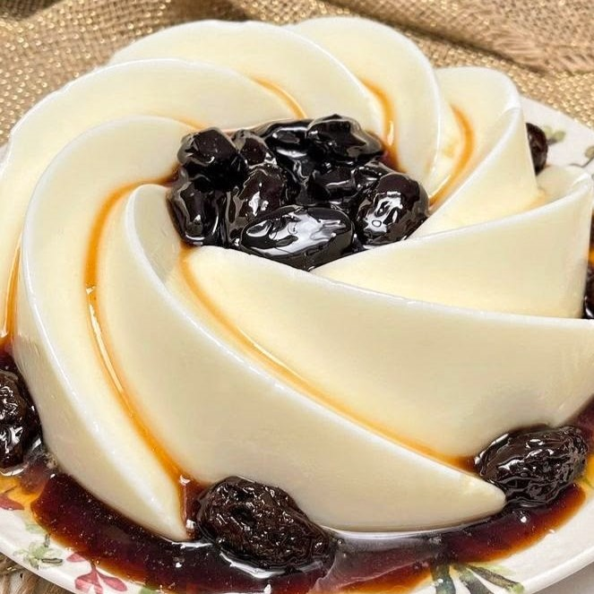

Dissolva o leite em pó aos poucos no leite em uma penala, logo em seguida reserve uma parte pequena do líquido para também dissolver a maizena. Misture na panela o leite de coco, leite condensado, misture e depois só ligar o fogo
Cozinhe o creme por uns 10 minutos em fogo baixo, adicione o sal e a maizena diluída aqui, mexa por uns 20 minutos sem parar ou até engrossar um pouco. (Nessa etapa é importante experimentar, para mim normalmente está bom. Mas se faltar açúcar coloque ¼ a ½ xícara de açúcar é bom provar antes para ajustar ao seu paladar, coloque o açúcar no creme com o açúcar já dissolvido depois misture)
Hidrate a gelatina com 6 colheres de sopa de água fria, e deixe descansando por 5 a 10 minutos até inchar. Depois disso derreta a gelatina hidratada leve ao micro-ondas por 10 a 15 segundos ou banho-maria até virar líquido de novo (não ferva, a gelatina perde força se fervida), depois disso despeje a gelatina no creme morno e misture muito bem para distribuir uniformemente.
Por último, acrescente o creme de leite, manteiga derretida e o coco ralado, a essência. Misture suavemente, isso garante textura aveludada.
Pegue uma vasilha, levemente untada com óleo (azeite ou óleo de coco) depois de untada despeje o creme
Geladeira por no mínimo 6 horas (de um dia para o outro é ideal, para de ser guloso se não dá errado)
A manteiga no final da um toque amanteigado no manjar além de dar um brilho a mais, por isso coloque a manteiga no final com o fogo já desligado. A essência no final é quase a mesma coisa, não vai deixar simplesmente parte do aroma da essência evaporar.
Creme de leite sem soro: se a lata tiver soro, escorra antes. Excesso de líquido pode deixar o manjar mole ou com textura separada.
Reforçando: Não coloque gelatina em líquido fervente! Perde o poder de gelificação.
